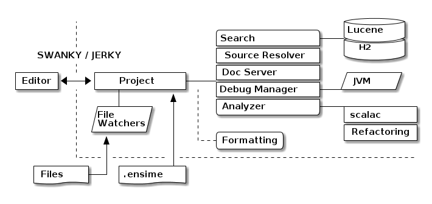

Avec un peu d'Emacs dedans !
[ ] Intellij[ ] Eclipse[ ] Ensime[ ] Autre ?
…
Installer le plugin sbt
// ./.sbt/1.0/plugins/plugins.sbt addSbtPlugin("org.ensime" % "sbt-ensime" % "2.1.0")
Générer une configuration par projet
% sbt ensimeConfig